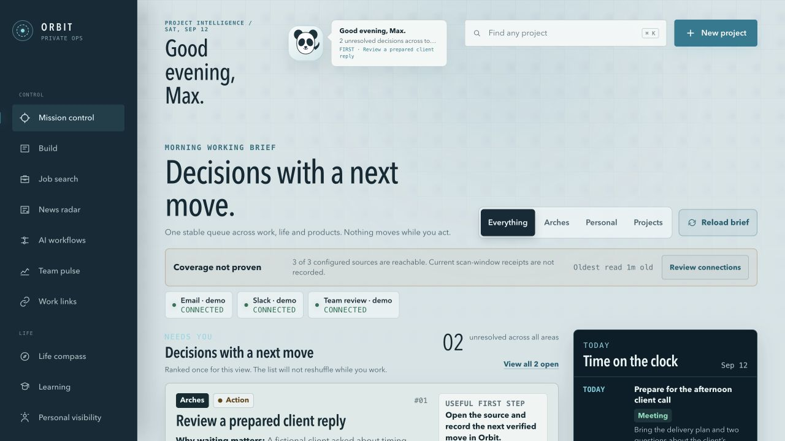
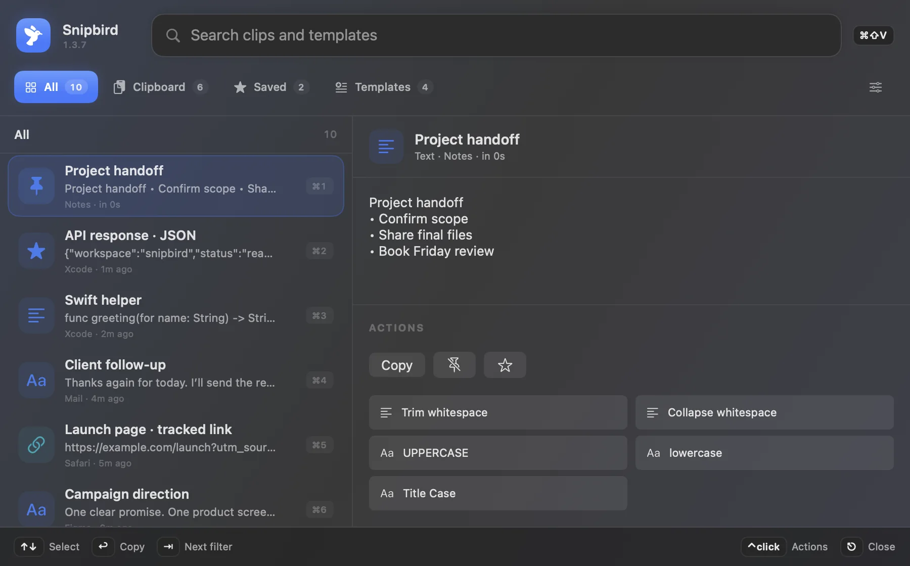
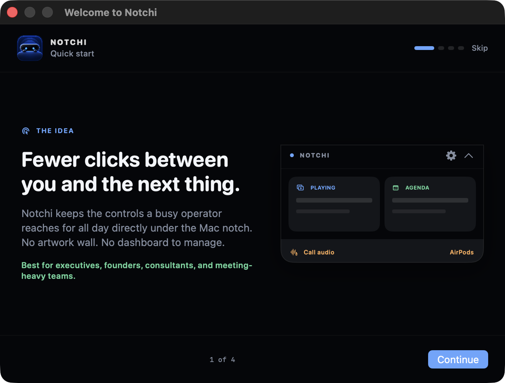

My application
to
Founding Customer Success Manager
I build teams, work with enterprise clients and make tools I use every day. Here are Orbit, Sales Copilot and a few smaller projects.
See my toolsOrbit
My executive assistant for work and life.

Messages, tasks and news in one place.
Orbit helps me run our US business and Bogotá office. It also helps me manage my personal life, learning and side projects.
A founder can start with replies ready to review, a clear task list and useful news already gathered. There is less catching up to do before getting to work.
What it helps me do
- Prepare replies before I even see a Slack message, email or WhatsApp. I decide what gets sent.
- Keep messages, calendar and team decisions in one view.
- Read a newsfeed with client news and activity for sales, and changes in Colombian laws for operations.
- Keep personal plans, learning, growth and other projects alongside work.
- Use screen captures of my actual work to learn how to help me better.
Sales Copilot
Help with the first message
and the next one.
Built for our sales team.
Our sellers needed messages that used a prospect’s real context. They also needed help with the next message, whether the person replied or not.
I built Sales Copilot for salespeople, managers and account managers. It drafts LinkedIn messages and follow-ups. It also explains why it chose the message, so the seller learns from it.
- Daily use
- Sales and account-management teams
- Time saved
- About 10 minutes per personalised message
- Connection conversion
- 15% → 40%
- Response rate
- 8% → 25%
- Generation cost
- About $0.08 per conversation created
Figures from my team’s daily use. These are before-and-after results, not a controlled test or an independent audit. Other changes may also have helped.
Public context: finding a suitable specialist quickly is difficult.
Why this approach
Start with a problem she mentioned. Ask one simple question. Save the full pitch for later.
Fictional prospect and portfolio examples. This is not a screenshot or a captured production output. The working tool is access-protected.
The work behind the tools.
I joined Arches as employee #1 in Asia 7 years ago. I built operations first, then sales and account management. Today, I lead our US business and Colombian entity.
Arches arranges research interviews with senior executives for consulting firms, private-equity firms, hedge funds and corporate clients. I still sell personally while building and leading the team.
- Built and lead an approximately 18-person commercial team.
- Built a 50+ person Colombian operation as General Manager and legal representative.
- Take enterprise accounts from first outreach to vendor approval, negotiation and paid delivery.
- Developed strategic accounts to 30–40% of their expert-network spending.
My earlier roles and experience
- General Manager, Colombia & Head of US BusinessArches · May 2025–present
Launching the US market and building the local operating team.
- Head of Sales, Marketing & Corporate Strategy, AsiaArches · July 2021–May 2025
Building the commercial function, developing accounts and coaching sellers.
- Senior Operations & Account ManagerArches · October 2019–March 2022
Built initial operations and led the company-wide CRM rollout. Promoted in July 2021 while retaining this remit during the transition.
- Independent Strategic AdvisorAsia Growth Bridge · January–November 2023
Market-entry and expansion advice alongside my Arches role.
- Founder & OperatorYoupid · January–August 2019
Built a business from its initial model through operations and sale.
- Strategic Project ManagerCaohejing Hi-Tech Park · October 2017–March 2019
International business development and partnerships in China.
A few smaller tools.
Other productivity projects I work on under MinutesBack.
Snipbird
Clipboard history, reusable messages and local actions for macOS.
Public documentation. Download paused pending release checks.Notchi
Agenda, media, call audio and working files in a compact panel under the Mac notch.
In development. This portfolio shows the Quick Start screen, not a released download.OTPeek
One-time login codes from email and forwarded iPhone texts, in a Mac popup.
Public source and build instructions. Not a notarized commercial release.Switcher
Move between individual Mac windows with previews and search.
A modified GPL-3.0 AltTab distribution. Credit belongs to the original authors too.Snipbird

Notchi

Why Dust?
I want to help teams use AI in their day-to-day work. I like understanding the problem, building a first version and improving it with the people who use it.
I work with enterprise clients and build tools for my own team. I haven’t yet led an AI rollout for a large external customer. These tools weren’t built with Dust. I can walk you through them with safe examples.
Connect on LinkedIn